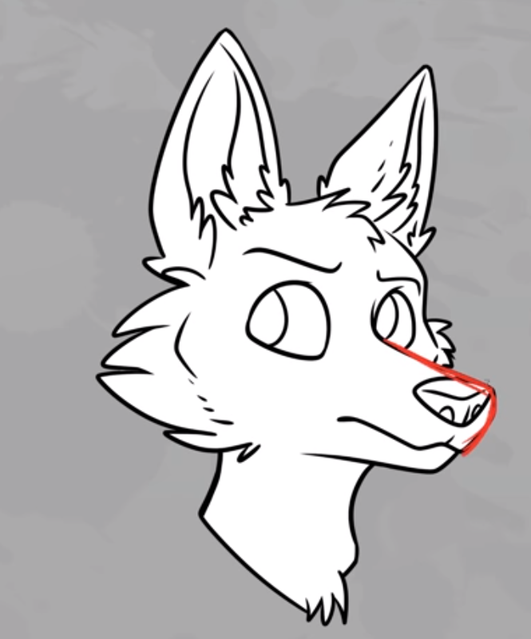
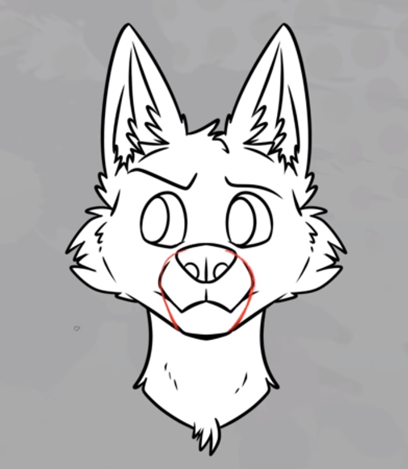
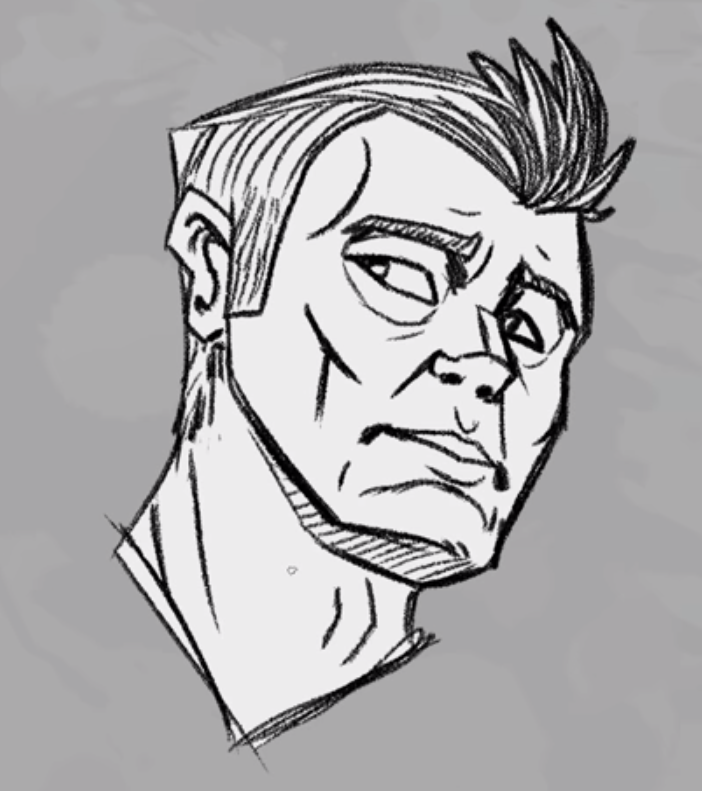
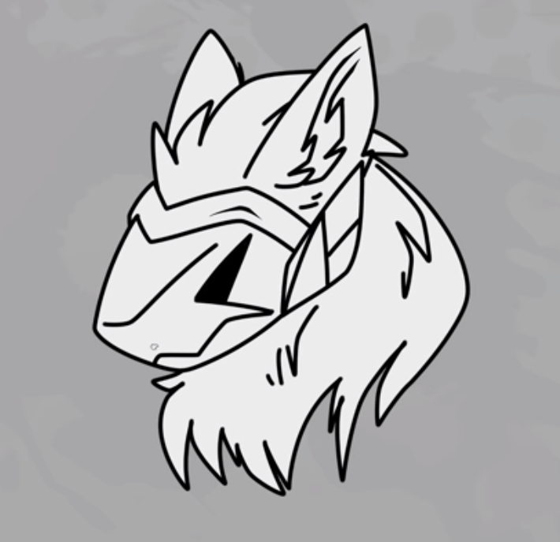
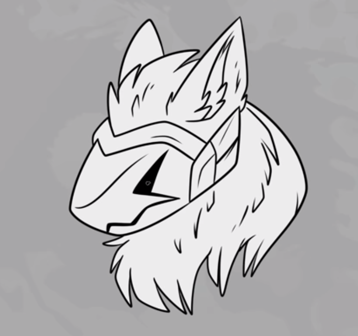
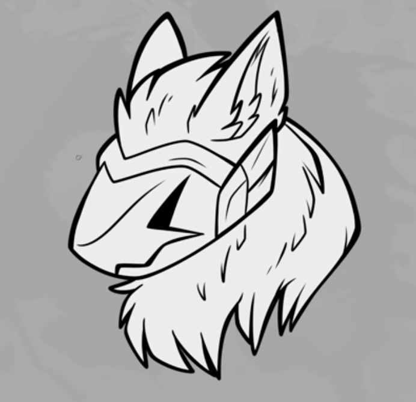
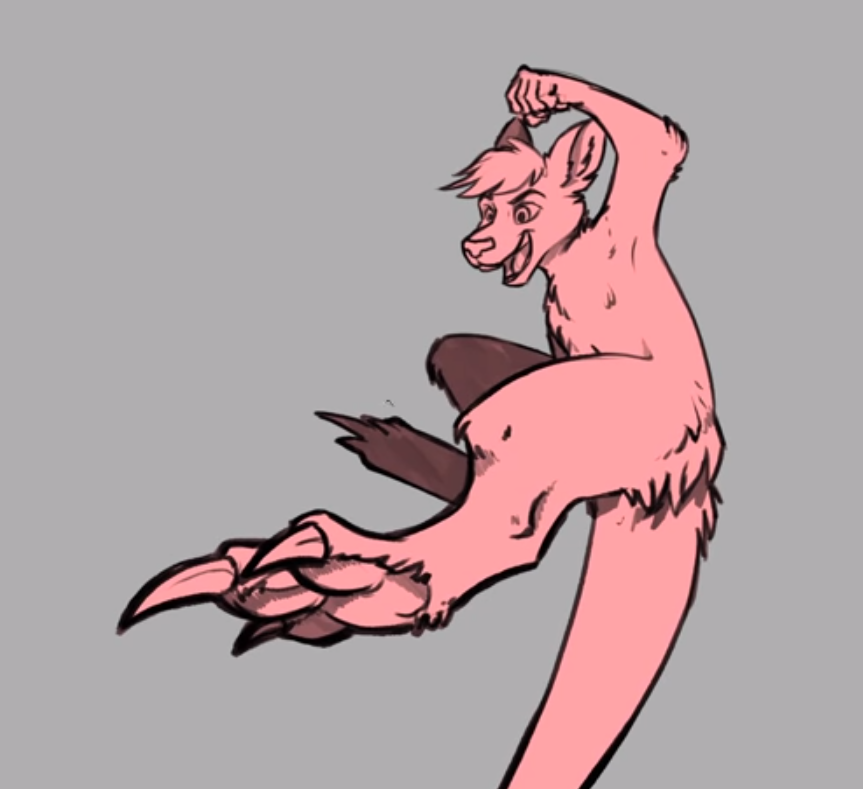

Typically these Lines usually cover the edges of your subject to expound its shape, It is usually found on General corners
From this example, A wolf, you can see the edge lines where usuallythe snout is shown, indicated by the red line

From this example, the lines from the wolf's snout has been simplified, It has been generalized from the viewers.

Typically these removes too many details in your art, It makes it look incomplete and makes it look entirely flat.
From this example, you can see there are details missing that makes the drawing look stale and wrong in a way.
But with shadows, it expounds the drawing with depth and detail in a way so use this as you may choose.
This it shows too many details in your art, It makes it look confusing and makes it hard to digest for the viewers.
From this example, you can see there too many lines. Although it might look cool its most probable to keep it simple. But it is a style nonetheless.

This it shows too many details in your art, It makes it look confusing and makes it hard to digest for the viewers.
One of the most easiest ways of line arting. It is the use of a line that is the same weight for everything like the example shown down below.

This is the use of variance of lines In a given stroke, This can create a lively character and a smooth one ,shown like inside the example down below.

These are weighted lines with purpose! It shows the dimension of the art in way that creates a strong sense of imagery to the viewers, see example below.

This it shows too many details in your art, It makes it look confusing and makes it hard to digest for the viewers.
This is one of the most trickiest part of line arting, it tests your knowledge about 3d object. Do not fret though, It is just as the further away something is the smaller the lines get, See the example below.
